Automation Takes Control
| Date: | 28 November 2019 |
| Index: | lecture writing |
Context
I was invited by by Ruth DeSouza to make a presentation to a symposium - Finding ways to make unstructured data usable - hosted by the Data, Systems and Society Research Network (DSSRN) at the University of Melbourne on 28 November 2019. I was in a panel on "environment, physics, sensors and other forms of pervasive data collection" and because I had been spending a lot of time with patent diagrams, I based my talk on them.
The title for the talk is a play on the title Mechanization Takes Command by Sigfried Giedion, with the idea of updating the project to an investigation of automations effects on everyday life.
Automation Takes Control
I begin with Figure 3 from BABY MONITORING WITH INTELLIGENT AUDIO CUEING BASED ON AN ANALYZED VIDEO STREAM, a patent filed by Google, Inc. in 2018.
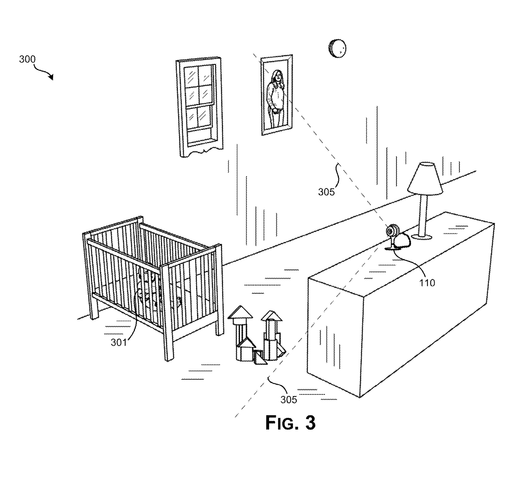
In short, this invention describes various ways to issue an alert (to the parents or caretakers) based on a baby's behavior, for example if the baby is in silent distress. There is a small camera that keeps an eye on things, and in Figure 5 we learn that it transmits audio and video to the cloud (or, Google's data centers) where various machine learning models are applied to the real-time data: the baby is identified through the bars, its position, eye state, and noise are all analyzed.
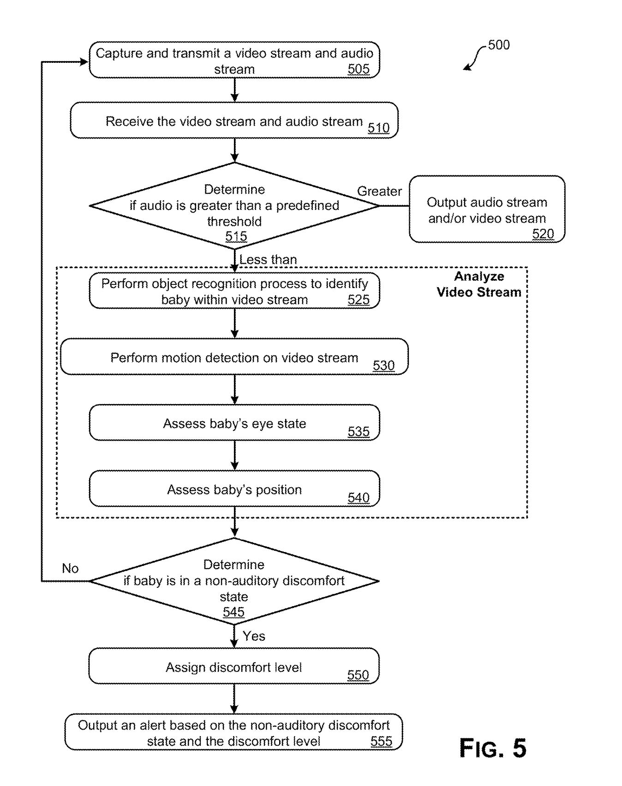
Here is a figure from another Google patent, filed in 2017, THOUGHTFUL ELDERLY MONITORING IN A SMART HOME ENVIRONMENT.
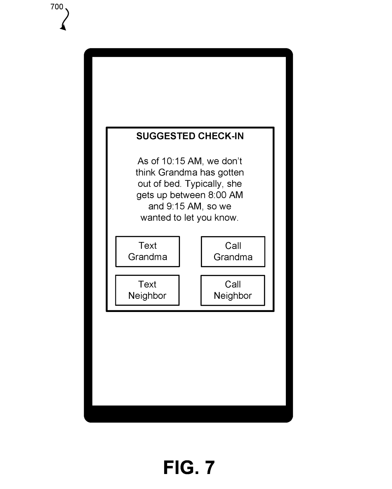
This works on a similar premise, except here, rather than a single camera, "a plurality of smart home devices in the residence" are used to build up an "ordinary behavior model," which is then constantly monitored to look for divergent behavior.
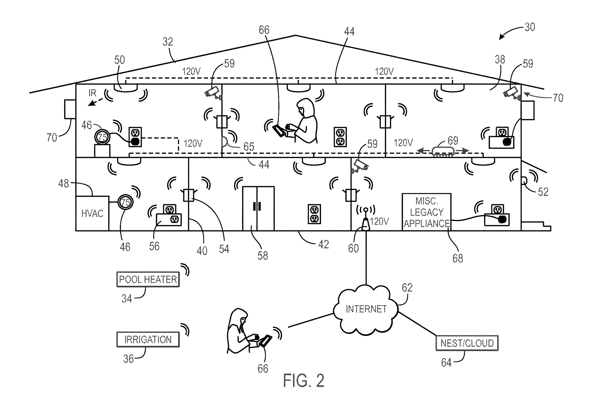 In this vision of the future, smart homes and smart cities (as in the Google affiliated Sidewalk Labs proposal on the Toronto Waterfront) are environments that adapt to individual and collective profiles, produced by a deluge of sensor-collected data. Antoinette Rouvroy, a Belgian legal philosopher, describes the regime of truth and power that emerges from this collection, processing, and structuring of data as algorithmic governmentality.
Just to be clear, governmentality is not big-G Government. Drawing on the concept developed by Michel Foucault after 1977, Rouvroy understands governing not as an exclusive act of public authorities, but as the more diffuse framing of the possible field of perceptions and actions. In this sense, ISPs, search engines, social media, recommendation systems, etc. are some clear commercial technologies through which private interests configure the possible.
In 2013, Rouvroy and Thomas Berns laid out the three stages of "algorithmic governmentality."
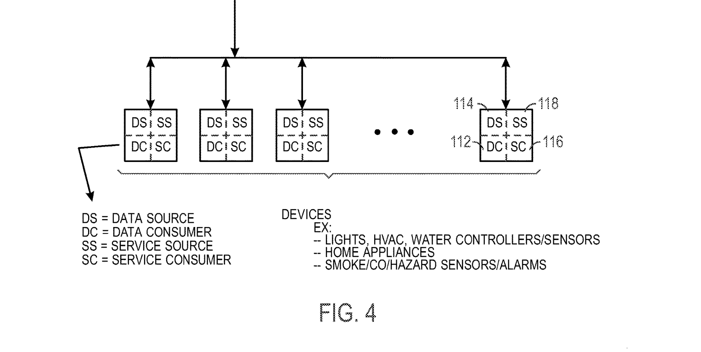 1. The collection of big data and the construction of data warehouses. "These data are collected and stored as much as possible by default, devoid of any prediction about specific end uses." This quasi-cross-section of a house, which reappears across a series of Google smart home patents, shows the house as an armature for devices and appliances, which constantly generate data, traces of living, and stream it to the Google (or partner) data centers. You can see microphones, cameras, and infrared sensors, but Figure 4 shows that each and every device is conceptualized as a provider and consumer of data and services.
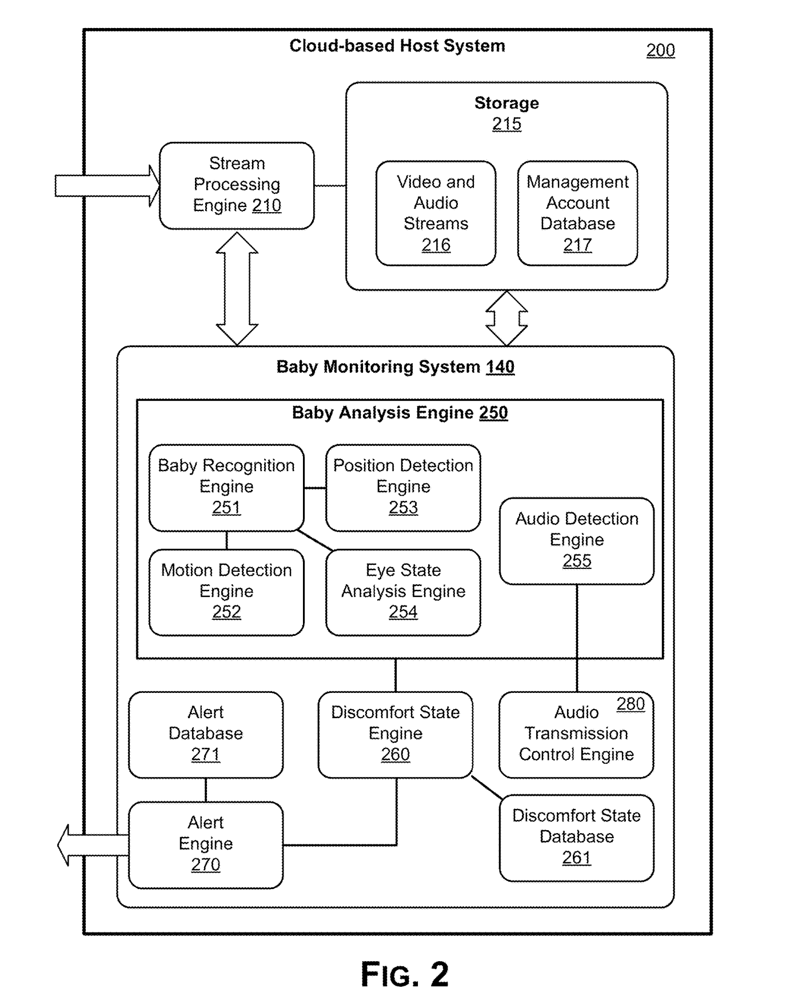
- The second stage is data processing and knowledge production. In this stage, the decontextualized traces of data are sifted through and processed to identify correlations and patterns. Although we might instinctively, and correctly, think of training machine learning models on training data derived from the collected data, this stage also encompasses the relentless drive to extract value from the data, irrespective of any particular application. In other words, while the baby analysis engine includes knowledge of baby positions and motion, it is also the constant return to and reworking of the video and audio streams. Could these streams become a data point, like height or weight, in the profile of the future adults? Perhaps it will be found that certain positions make a baby most receptive to early language development?
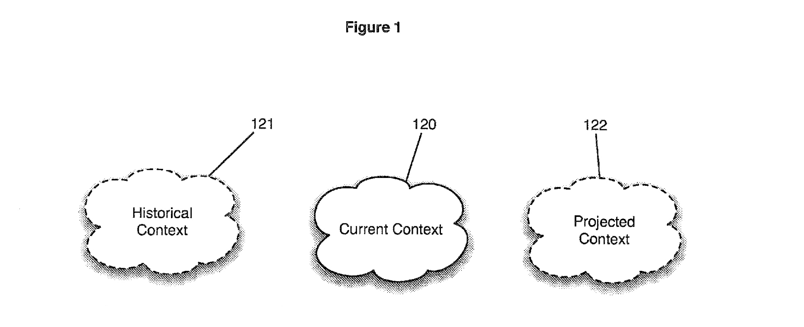
- Finally, the third stage of algorithmic governmentality is action on behaviors. Here the knowledge derived from data processing feeds back to individuals by anticipating their behavior. This feedback can be limited to an intervention on their environment, in the reactive and intelligent world of the Google patents, such that the data it collects from multiple sensors is in real-time used to adapt the environment to specific needs and dangers. In a 2011 patent simply called Feedback System, Google uses the adapts the entire advertising environment around a user taking into account their current and historical contexts in order to predict as much as create their future context. Importantly, this doesn't constrain the individual so much as rearrange their world around them. William Burroughs would say control isn't control if there isn't a sense of free will and choice, otherwise it's just being used, like a tool.
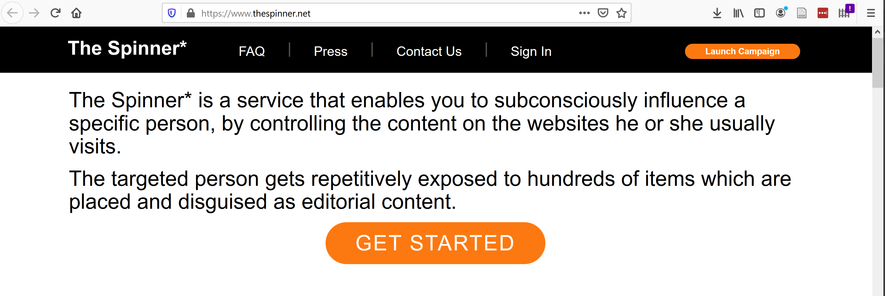
Whether this control actually succeeds or not is not really the point. Rouvroy writes in a follow-up that "what counts most is to identify the extent to which relying on the apparent operationality of algorithms spares us a series of individual and collective perceptual, cognitive, evaluative, conventional, institutional, linguistic efforts or tasks, and, at what price." In other words, algorithmic governmentality short circuits disappointment and deliberation. Bypassing work and time, it gives us what we want before we have even recognized the lack that initiates desire.
At one time, automation would save work in order to free up time. Today, however, as this regime takes hold, it's apparent that algorithmic automation swallows up time, particularly those times that had been difficult to integrate into systems of capitalist valorization. This is perhaps why Google's patents situate themselves in and restructure relations of care. Although, in doing so, these patents recognize domestic labour as work, they do nothing to transform gendered and racialized relations of domination. Instead, they subsume the home.
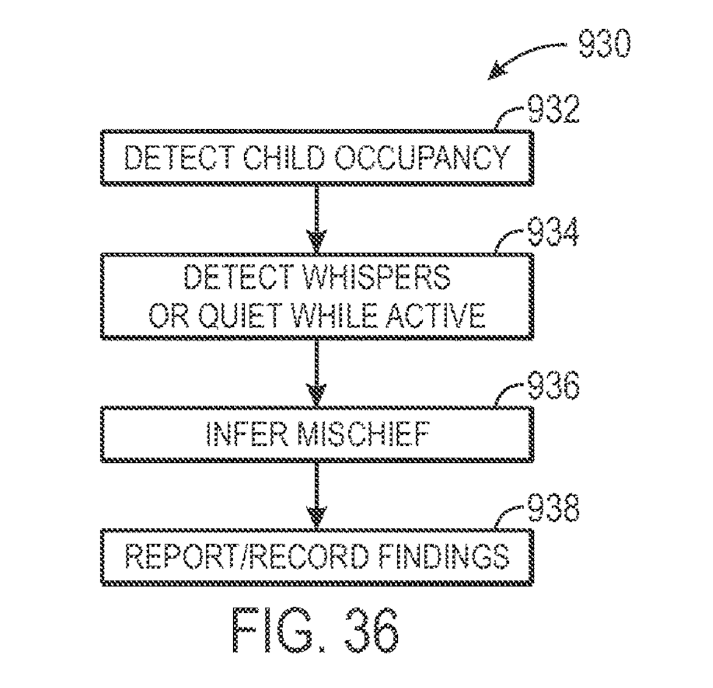
In SMART-HOME AUTOMATION SYSTEM THAT SUGGESTS OR AUTOMATICALLY IMPLEMENTS SELECTED HOUSEHOLD POLICIES BASED ON SENSED OBSERVATIONS, the appliances watch over the children, infer mischief, and then implement a grounding policy, all managed by Google machine learning. This disciplinary scenario, drawn from a normative imagination of the family, stands in for the very real growth of predictive policing and automated watchlists. Just yesterday, The Intercept reported that Amazon's Ring (surveillance doorbell) would integrate with police databases (sending and receiving) to notify homeowners when a "suspicious" person entered their camera frame.
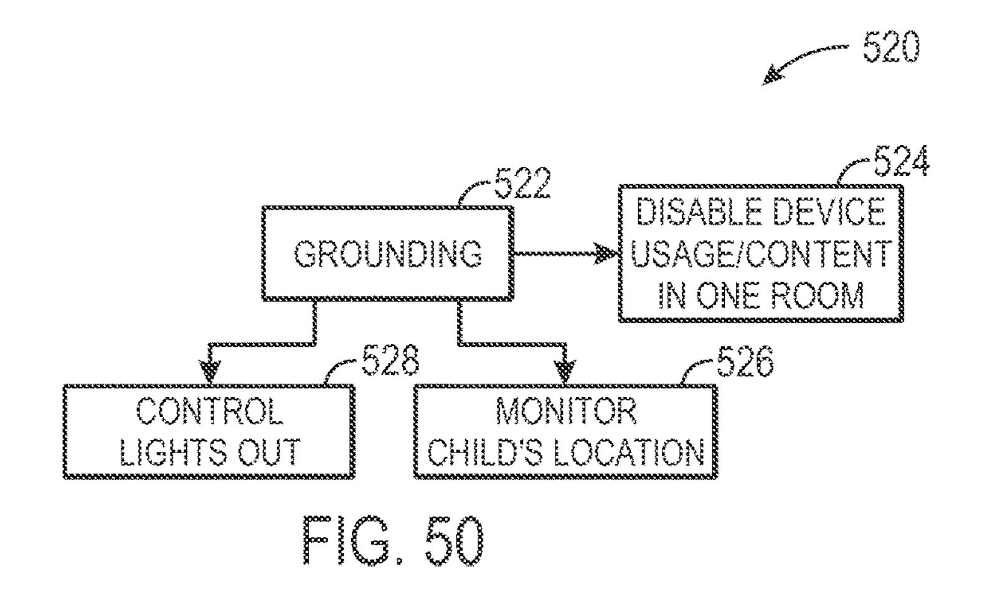
Citizens of Western democracies are all too willing to grant tech giants monitoring and surveillance capabilities that they would never (for good reason) accept from their governments. This is, in part, because the incursions are made one fun and convenient device at a time, without a full understanding of how that sensor plugs into a wider algorithmic regime of data markets and algorithmic control. It is also in part because the companies that aggregate all of this unstructured data don't quite know themselves. Uranium, after all, was observed for centuries before it was deliberately mined for radium. Perhaps the Cambridge Analytica scandal was our first taste of how the data mines that we, as a society, are creating, will come to be exploited.

Returning to the baby, the little miner, from the patent that I started out with: the baby is alone in a large empty room, maybe in a large, empty house. There is a framed picture, perhaps of the baby's mother, who is watching some recommended YouTube videos, out getting her step count up, or driving an Uber for extra cash. It's all very loose and casual and no one plans ahead in this world. We sweat and exhale unstructured data in this unstructured world.
As the feminist writer Jo Freeman recognized half a century ago, however, "structurelessness becomes a way of masking power," and at this moment when Google's political imaginaries are beginning to realize themselves in our world, we would be well-served identifying technological points of intervention and political demands that might be made across the three stages of algorithmic governmentality.
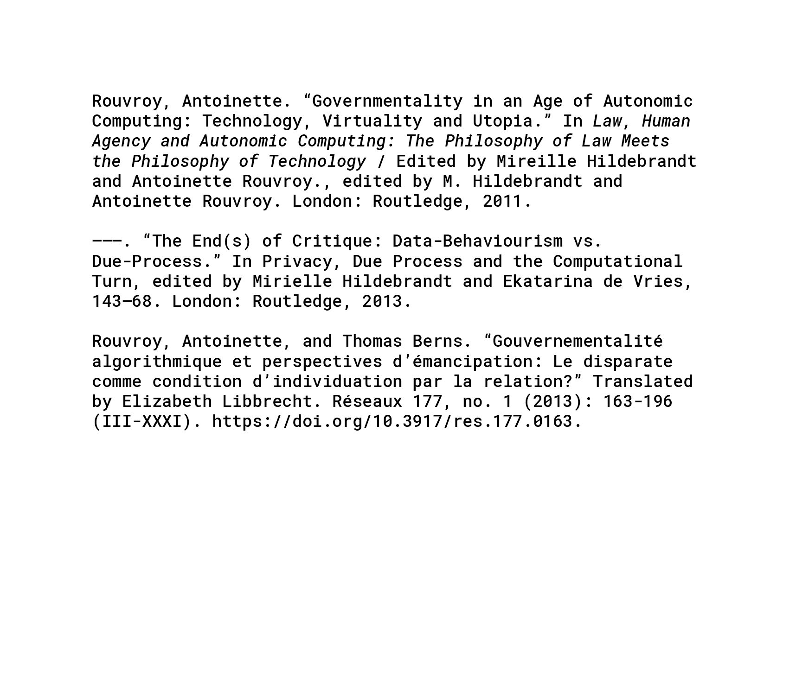